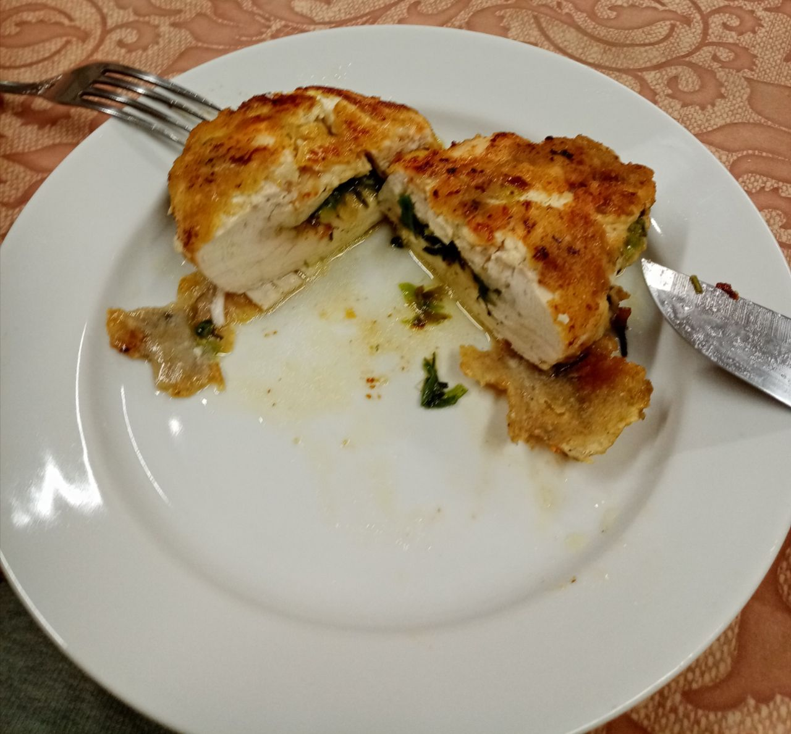

Kievan kotlety

Description
Literally the tastiest thing in the world
Preparation time: 30 minutes
Cooking time: 20 minutes
Ingredients
- 4 chicken fillet
- 100 grams of butter
- Literally any spices you want, pepper and salt
- Fresh onion and parsley
- Breadcrumbs
- 1 egg (for breading)
- A lot of cooking oil (200 ml)
Steps
- Put butter, spices, salt and greens into one bowl and stir it all together
- Cut open the filets (so that you increase the surfact, don't separate them)
- Beat the fillets with a mallet until it's around 1 cm thin
- Stuff the chicken with the butter
- Freeze the fillets for around 30 minutes so that the butter doesn't spill out while cooking (Optional)
- Bread the fillets with breadcrumbs and egg yolk
- Start heating up the oil
- Deep fry the soon-to-be kotlety for around 7-10 minutes